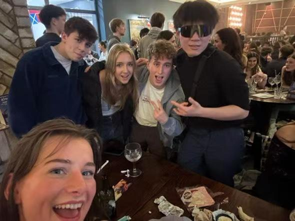
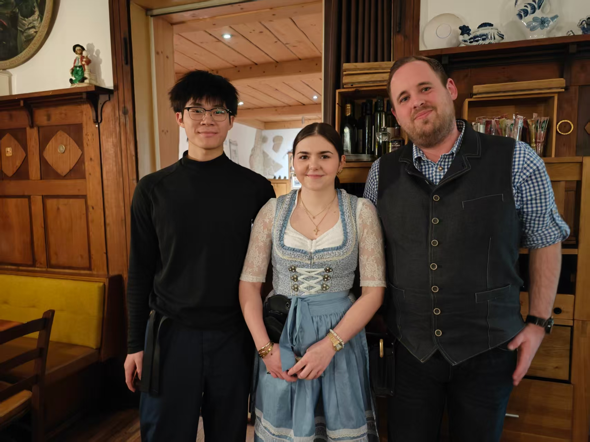
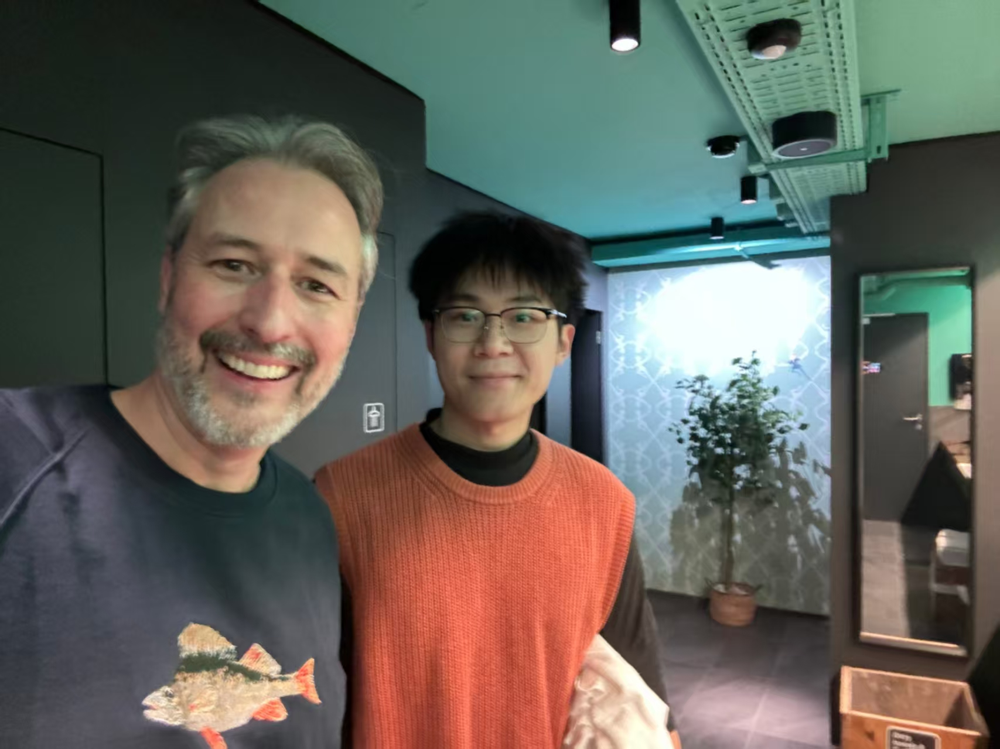
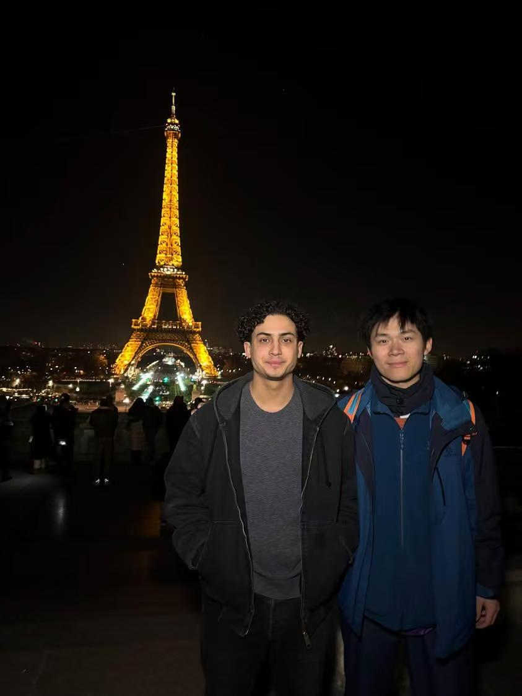
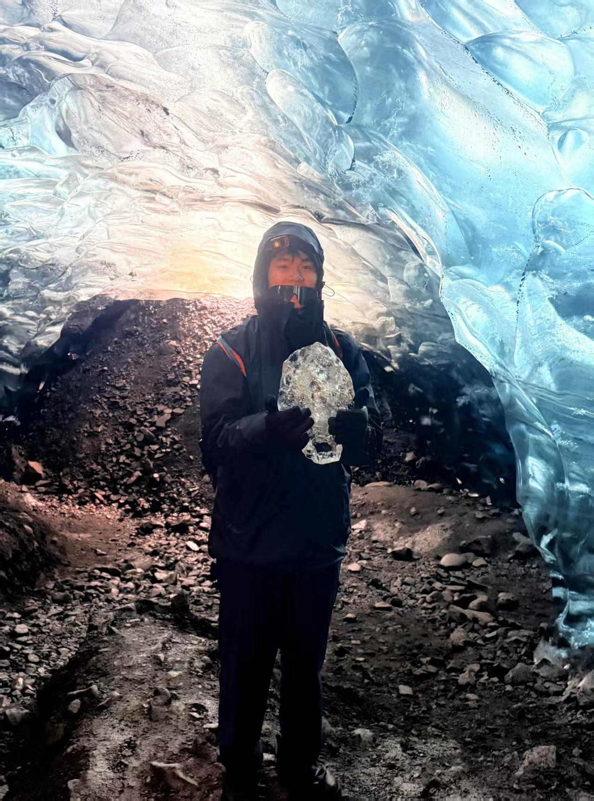
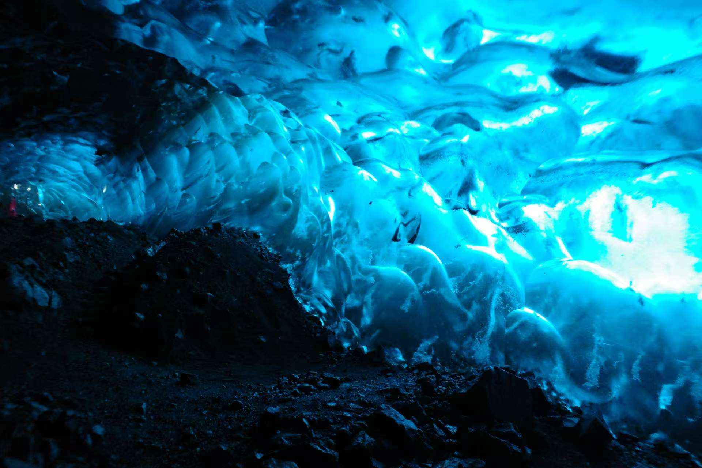
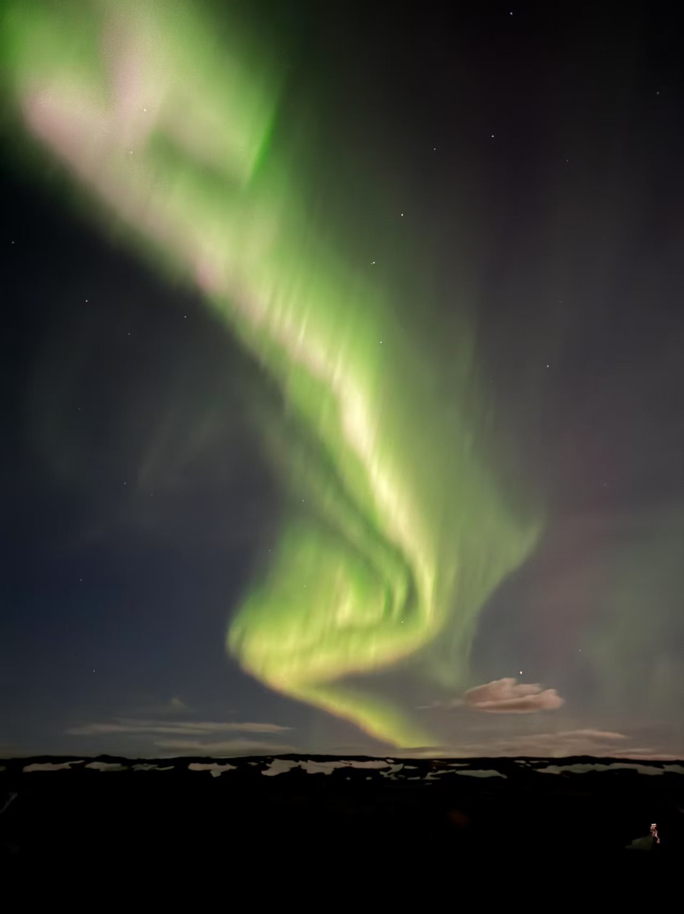

This is not a perfect travelogue. It is the true story of a journey filled with missed trains, unexpected setbacks, and a naivety that was repeatedly crushed by reality—only to be pieced back together by the kindness of strangers and the sheer beauty of the landscapes.
Chapter 1: The Romance and Reality of Italy
My journey began with a frantic "walkathon." After landing in Rome, I devoured the city on foot with a greed I didn't know I possessed. From the Mouth of Truth to the Colosseum, from an expensive lunch to the sunset on Janiculum Hill, I walked until my legs felt like lead. Florence gave me a sharp welcome. I severely sprained my ankle right in front of the Accademia Gallery, leading to my first-ever experience with a European ambulance and emergency room. There, I met a 33-year-old Roman woman, an architect who had fainted from overwork. We chatted about the endless complaints of Europeans, yet found a strange camaraderie in a foreign land.
Then, the miraculous encounters began to pile up. In a hostel kitchen, I met an American-Spaniard from Illinois and an elderly French solo-traveling woman with a legendary past—born in East Germany, she had been imprisoned, and after the Berlin Wall fell, she eventually bought a manor in the south of France. The three of us talked for a long, long time over dinner. The next day, I ran into the Illinois girl again at the Cathedral of Santa Maria del Fiore, and we spent a wonderful afternoon in Pisa.
"Sometimes I focus too much on friends, I need to learn to refuse or just do what I want to do. Don't be so 'nice.' Being unconditionally good only leads to getting hurt."
But it was Venice that delivered the cruelest slap in the face. Just as I was asking someone about job prospects in the UAE, my phone was stolen. One moment I was in deep conversation with roommates from Romania, Pakistan, India, and Bulgaria about the "price of freedom"; the next, I was plunged into absolute panic and helplessness. Two kind Italians tried to help me, we reported it to the police, but it was all for nothing. That night, I finally understood what I had scrawled in my diary. In Milan, I gave up the fantasy of getting my phone back. I browsed vintage shops, regretting not buying a retro suit in Italy. But it was also there that a group of fun-loving Brits told me, "Your English is great, you should be more confident." That single sentence was like a beam of light cutting through the gloom.
Chapter 2: From the Alps to the Seine, Encounters with the World and Myself
Leaving Italy felt like a rebirth. A high-value capsule hotel in Switzerland and a Coop roast chicken quickly soothed my soul. I rode the Golden Pass train, getting so lost in the views of snowy mountains and green pastures that I missed my stop. On a transfer bus, I traversed the entire country of Liechtenstein, ending up in a fine-dining restaurant in Feldkirch, Austria, where the waitresses wore traditional attire. They were buxom and friendly, cinching their waists so tightly "their chests looked bigger than their heads." I ordered the 40-euro three-course meal and foolishly asked what made them different from Germany, which seemed to dampen their spirits.
In Interlaken, I had a night I'll never forget. I made a mad dash to see the Matterhorn before sunset. In Zermatt, I shared another Coop roast chicken with a fellow solo traveler and drank the "mind-blowingly delicious" green milk he recommended. We got so caught up in conversation that we missed our train back, again, and had to wait an hour. When I finally got back to the hostel and pushed open the door to my four-person dorm, three American girls were asleep in their bras. The room was tiny, maybe seven or eight square meters, and entirely made of wood that creaked with every move. It was filled with an indescribable "estrogen-scented air," neither fragrant nor foul. In the middle of the night, I went to the bathroom and realized I'd forgotten my keycard. After hesitating for half an hour, I had to wake one of them up. She opened the door, sleepy and wrapped in a fragrant aura. They were gone before I woke up the next morning. I often wonder, if I hadn't missed that train, if I had come back an hour earlier, would our stories have intertwined more? Perhaps life is just a series of these near misses.
Paris was a city for friendship and philosophy. My old friend Ilies treated me to an authentic steak dinner and took me on an in-depth city walk. We talked about French attitudes towards sex (he said his body count of seven wasn't high for his age), about bringing a girl home from a club (he said families don't mind sharing breakfast the next morning, and told a hilarious story about a girl's police-officer father pointing a gun at him). Over Indian food, we discussed the relationship between France, the US, and China. It was a day of genuine intimacy and honest conversation.
Outside the Louvre, however, a four-hour queue gifted me something more profound. I struck up a conversation with a Californian couple, Scoot and Merolin. He was a life coach. After listening to my internal conflict between making money and pursuing art, he asked me a question that pierced right through me: "What's the difference between you using mathematics and skills to make money in a hedge fund, and Claude Monet painting five different versions of the Rouen Cathedral under different light?" The question left me reeling. Miraculously, the next day, at the Musée d'Orsay, standing right in front of a Monet painting, I ran into him again. He invited me to California and told me I could answer his question whenever I was ready. That encounter was more stunning than any masterpiece in the museum.
Chapter 3: Iceland, an Epic Forged in Nature
The Icelandic leg of my trip began with a last-minute scramble to find travel buddies online after my original plans were cancelled by a storm. Our adventure kicked off with a tense negotiation with the "sexy rental car lady with green eyes, black hair, and a tight outfit," successfully getting a $70 compensation for a downgraded car. Then, we plunged headfirst into the Icelandic wilderness. It was a driving experience I will never forget. Winding roads, flat terrains, distant snow-capped mountains and grasslands—the view in every direction was saturated with beauty. We walked behind the curtain of Seljalandsfoss waterfall, climbed to the top of Skógafoss, and hiked towards the volcanic ash-covered Sólheimajökull glacier. I always wanted to get a little closer, but my companions were tired, so I turned back with a tinge of regret. At the hostel in Vík, the kitchen was crammed with families from different countries. We shared a salad from a French family who couldn't finish it, the girls cooked a meal that tasted of home, and I took on the task of scrubbing the stubbornly sticky pots.
 On the day of our ice cave tour, we bounced along a rugged trail in a massive super-jeep through wind and rain, finally entering the ethereal blue crystal palace. The natural light filtering through the ice was a deep, saturated blue on that overcast day; when the sun came out, it softened into a pale, whitish-blue. It was crowded, but I tried my best to commit the surreal beauty to memory. At the Jökulsárlón glacier lagoon, we spotted seals poking their heads out of the water; on Diamond Beach, translucent chunks of ice lay scattered across the black sand.
The climax of the trip came unexpectedly on the last day of our road trip. After finishing the Golden Circle tour and enduring a bizarre series of events—including a friend from our group temporarily going missing after an argument and a near-disaster while trying to dispose of trash—we returned, exhausted, to our hostel in Reykjavík. From the kitchen, I saw a long, grey-green ribbon of light in the sky. It was the Northern Lights! I rushed outside with the Brazilians, Indians, and Welsh people from the kitchen. We watched as the light danced and shifted right above the city center, even showing hints of purple. In that moment, we all spoke different languages but shared the same cosmic awe. I recorded a video of myself, rambling incoherently, filled with a post-disaster euphoria. Days like that, I thought, make you feel truly alive.
Chapter 4: The British Isles, Finding Connection and a Way Home
The UK leg of my journey felt more like a search for familiar coordinates. In Bath, I was welcomed into a circle of warm, friendly English girls, becoming the center of their party conversations about travel, sex, and the future. In Birmingham, I met up with old friends and was touched by the kindness of an exchange student, Wu Junming. He showed me around campus, took me grocery shopping, and cooked me a feast in the evening. His Cantonese-style blanched bok choy was better than any restaurant's. He insisted on doing all the dishes; all I could do was buy a bottle of wine to share. I will cherish that warmth in a foreign land for the rest of my life.
I finally fulfilled my dream of watching a Premier League match. At Villa Park, I was swept up by the passion of the home fans. Even when their team conceded a goal, they would immediately start chanting, "Come on, Villa!" This was a stark contrast to the atmosphere at the Emirates Stadium a few days later. The Arsenal fans were too gentlemanly; the stadium fell silent when the team was losing, lacking the raw, vocal support needed to pull a team out of a slump. In London's British Museum, when I saw the dragon-patterned tiles that should have been in the Forbidden City and the Bodhisattva murals that had been cut into 12 pieces for transport, a complex emotion washed over me. I finally understood the saying, "No Chinese person can walk out of the British Museum with a smile".
On the last day, at Heathrow Airport, I helped an auntie I'd met on the road buy liquor, admitting to myself I had a small, ulterior motive of possibly networking. I managed to crack the code of a second-hand suitcase I bought for 10 pounds and spent the flight chatting with my seatmate, a man from Fujian who had illegally immigrated to London years ago. As the plane took off, I began to write all this down. In 37 days, I had transformed from a kid sheltered by his mother into an adult who could solve problems independently, find order in chaos, and connect with people from different cultures. I learned to be cautious, but also to be grateful. I saw how vast the world is, and how small I am.
Back home, I've found that my biggest enemy is the temptation to fill my time with the cheap dopamine hits of short-form videos. This journey briefly pulled me out of that information cocoon. Now, the real challenge is not to fall back in. As for Scoot's question, I don't have a final answer yet. But I think I'm starting to understand. Making money and painting might not be mutually exclusive. What matters is that whichever path you choose, you must pour all your passion and sincerity into it, just as Monet did when he painted light. And I am now on that path, searching for my own passion and sincerity.